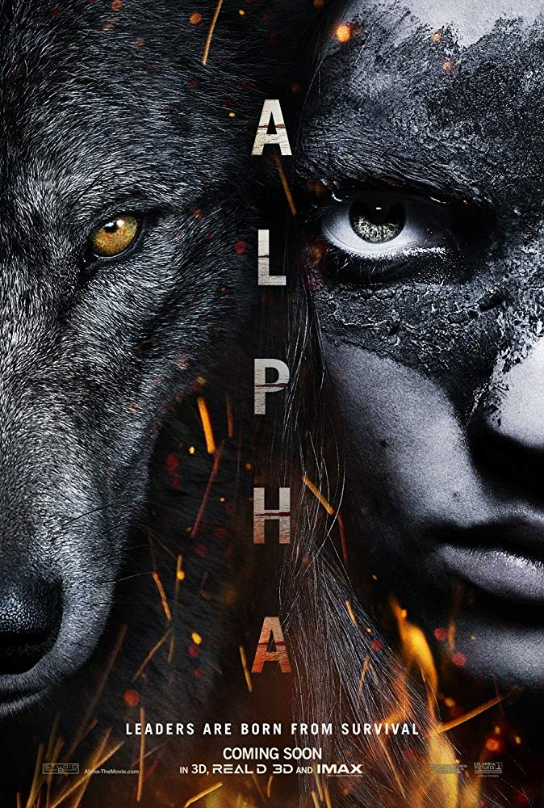
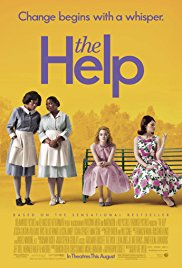
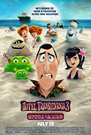
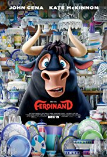

1.Alpha(2018)Adventure , Drama , Family | 17 August 2018 (USA)
Director: Albert Hughes
In the prehistoric past, a young man struggles to return |
2.Coco(2017)
Animation , Adventure , Comedy | 22 November 2017 (USA)
DirectorLee Unkrich, Adrian Molina (co-director)
Aspiring musician Miguel, confronted with his family's |
3.The Help (2011)Drama | 10 August 2011 (USA)
Director:Tate Taylor
An aspiring author during the civil rights movement of |
4.Hotel Transylvania 3:

|
5.Lucy(2014)
Action , Sci-Fi , Thriller | 6 August 2014 (France)
Director: Luc Besson
A woman, accidentally caught in a dark deal, turns |
6.Ferdinand(2017)Animation , Adventure , Comedy | 15 December 2017 (USA)
Director: Carlos Saldanha
After Ferdinand, a bull with a big heart, is |